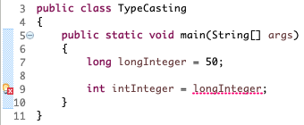

When value of one type could not be "automatically" converted to value of the other type then this conversion is done explicitly by the user. This is called type casting. Example,
Value of long type when assigned to variable of type int cannot be converted automatically to int. Hence the long value has to be explicitly type casted to int.
